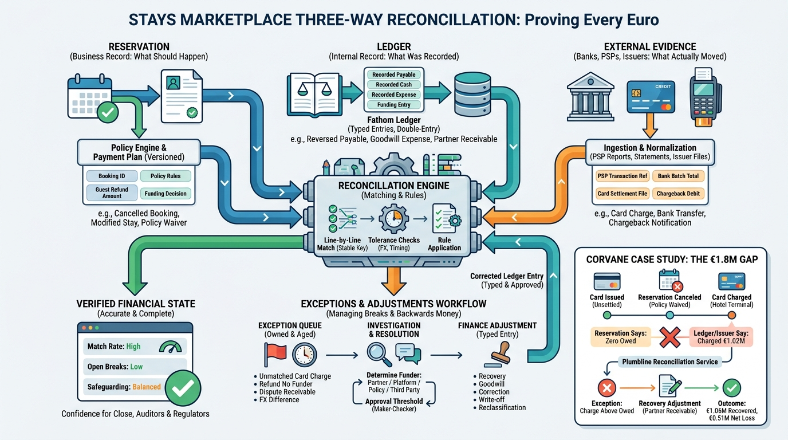

Part VI — MONEY: Who Pays Whom, When and How Much
Closing the Books: Refunds, Chargebacks and Reconciliation

Image generated by Google Gemini (gemini-3-pro-image-preview)
Part VI — MONEY: Who Pays Whom, When and How Much

Image generated by Google Gemini (gemini-3-pro-image-preview)